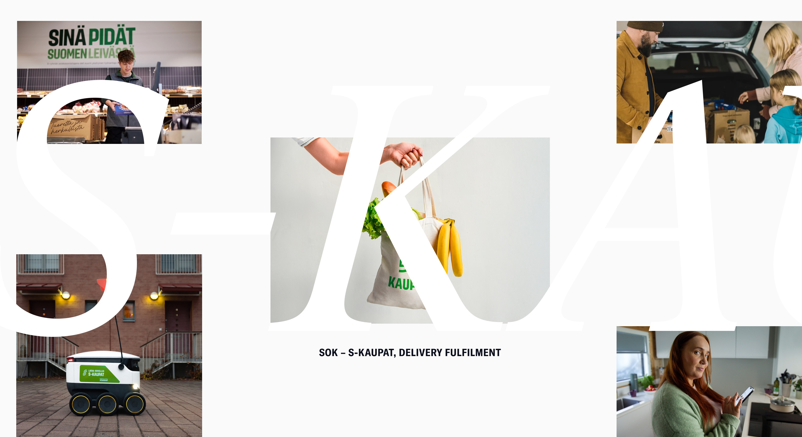
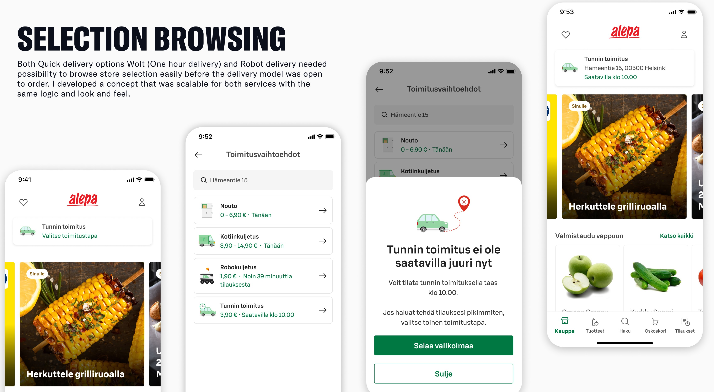
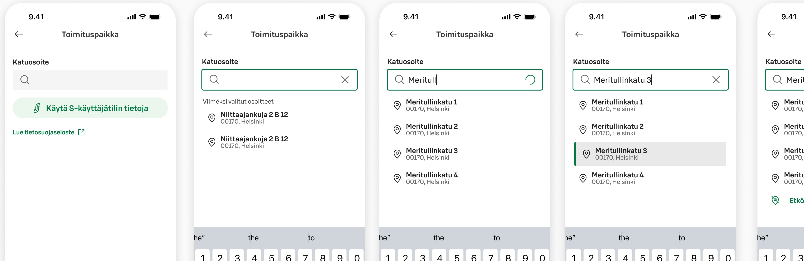
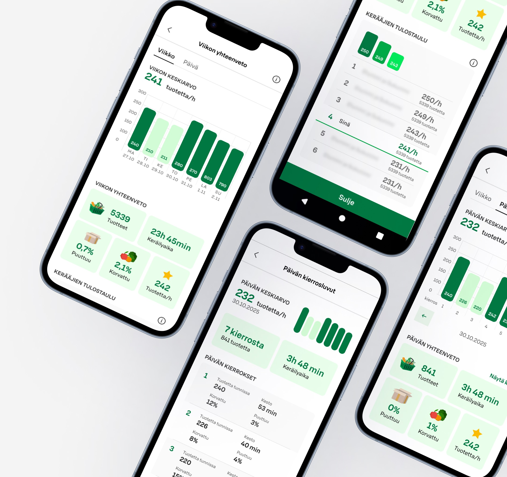
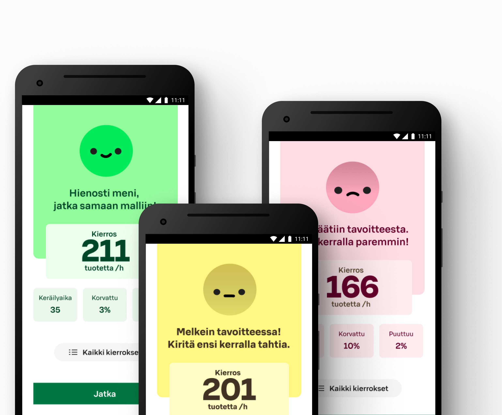
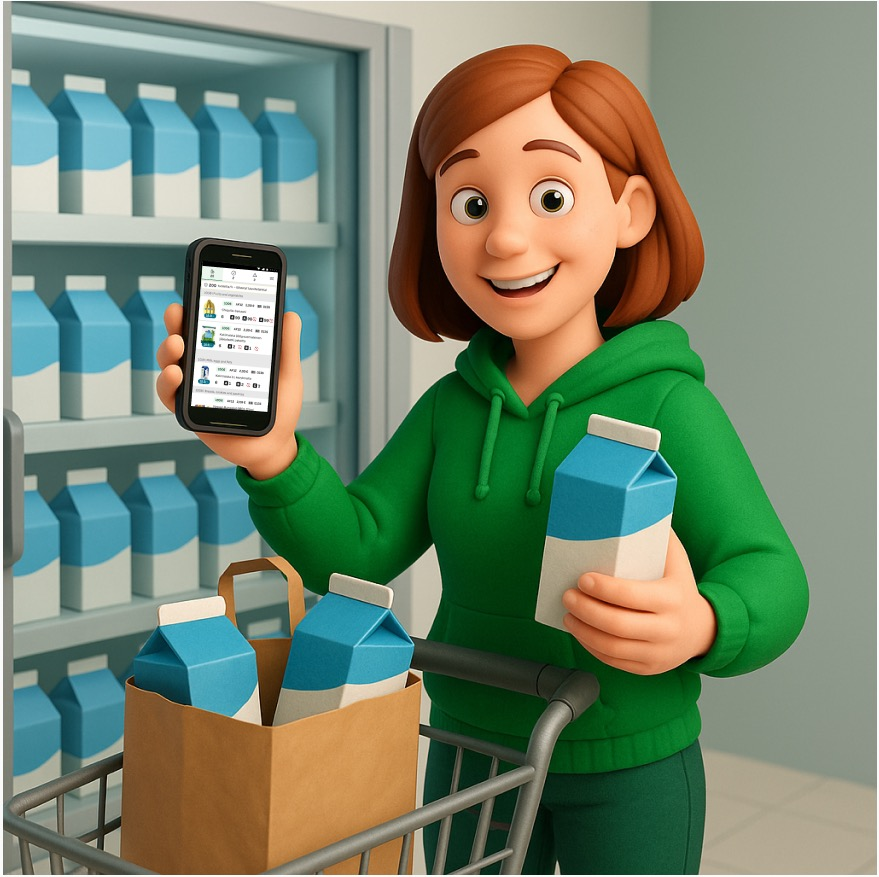
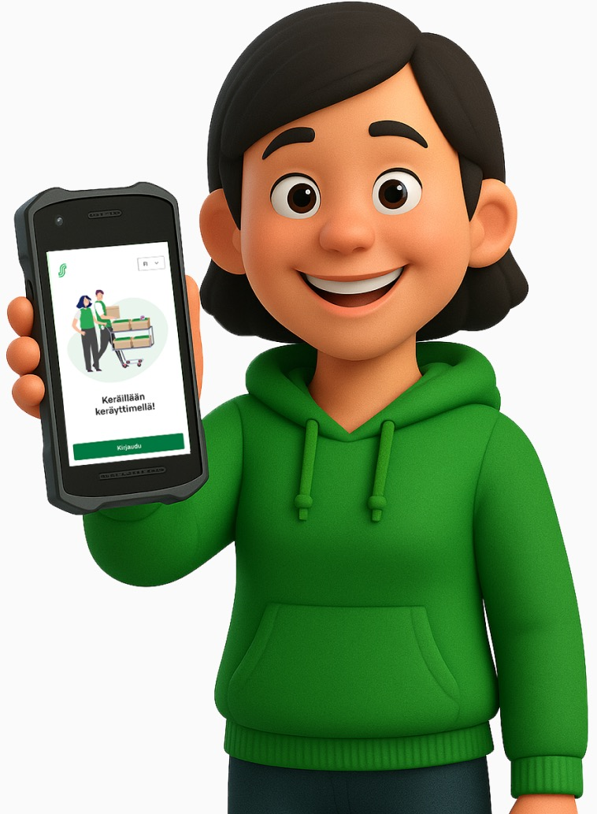

SOK – S-Kaupat, delivery fulfilment


Designing fulfillment experience
My work in S-kaupat spans the full lifecycle from early feature concepting to production deployment, in close partnership with the development team. My role as product designer is a key role in driving customer value and ensuring a seamless end-to-end delivery experience for employees and customers
Working fully as an interim Product designer for the Picking team, established in early August through the merger of the former Store-tech and CFC/MFC teams. While a significant portion of my time has been dedicated to improving the in-store picking flow and the broader pickup experience, I also work closely with the Home Delivery team to enhance the pickup experience for one-hour deliveries and Robot orders.
I am also part of the core team in a major initiative aimed at harmonising in-store picking operations at the co-op level, ensuring alignment and consistency across the entire webstore operating model.
Selection browsing
Both Quick delivery options, Wolt (One hour delivery) and Robot delivery, needed the possibility to browse store selection easily before the delivery model was open to order. I developed a concept that was scalable for both services with the same logic and look and feel.

Utilising saved address
Both Quick delivery options, Wolt (One hour delivery) and Robot delivery, needed the possibility to browse store selection easily before the delivery model was open to order. I developed a concept that was scalable for both services with the same logic and look and feel.


New and improved picking data
As part of a major initiative focused on improving in-store picking operations, we concepted a completely new way of presenting pickers’ daily and weekly performance metrics. The aim was to make the numbers clear and directly supportive of day-to-day execution on the shop floor.
The starting point was that pickers could see weekly picking data, but the numbers and the logic behind them were not understandable or actionable in day-to-day work. During H1/2025, we gathered feedback on the existing views and used that input to drive the key design decisions.
We then launched new daily and weekly data views in beta across 10 stores, and collected structured feedback via an in-device survey on the Keräytin.
The outcome has been clearly positive: the new views are perceived as a significant improvement compared to the previous ones, and they support daily performance management more effectively.

Boost for the picking efficiency
Continuing with the Similar to Same theme, there was also a need to coach pickers to do their job at the right pace. For that we concepted and tested new ways of presenting data after each picking round.
Tested through interviews with the store pickers the round ending data view evolved to its current state. Presented information was found relative and quick to comprehend.
Results and impact
Results and feedback from the store employees

The weekly summary clearly shows the collection figures for the week. A clear summary of the entire week.
Feedback from the data
view survey

Very illustrative. Supports learning. Able to detect differences between rounds to reinforce learning. Also good that you can directly see the number of collecting rounds.
Feedback from the data view
survey